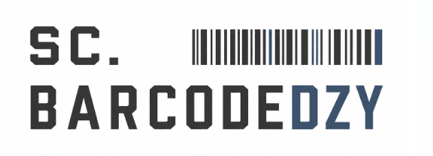

Template Studio
↶ Undo
↷ Redo
บันทึก Template
ใช้กับฉลากแบบนี้บน A4
ยกเลิกการแก้
ต้นฉบับและการถอดแบบ
＋ วางหรือเลือกไฟล์ฉลาก
PNG · JPG · WebP · SVG · PDF
ชื่อ Template
กว้าง (mm)
สูง (mm)
＋ เพิ่มฟอนต์ต้นฉบับ
เลือก OTF / TTF ได้หลายไฟล์ รวม Regular และ Bold ที่ใช้จริง
วิธีถอดแบบ
คงภาพต้นฉบับ แก้เฉพาะช่อง
คงภาพและตีกรอบช่องเอง
สร้างเลเยอร์เวกเตอร์จาก OCR
ถอดข้อความ เส้น และบาร์โค้ด
SVG และ PDF อ่านขนาดจากไฟล์ · สำหรับภาพถ่าย ให้กรอกขนาดพิมพ์จริง
เปิดตัวอย่างฉลาก LUNA
พื้นที่ฉลาก
งานที่แก้ไข
ตัวอย่างก่อนส่งออก
ซ้อนต้นฉบับ
ต้นฉบับ
ดูความต่าง
−
25%
50%
75%
100% · พอดี
125%
150%
175%
200%
250%
300%
400%
500%
600%
800%
+
ขยายพื้นที่ฉลาก
ความทึบต้นฉบับ
45%
เลเยอร์บนฉลาก
ตีกรอบช่องข้อความจากภาพ
＋ ข้อความ
＋ กรอบ
＋ เส้น
＋ Barcode
＋ ส่วนภาพ / โลโก้
แก้ไขเลเยอร์
เลเยอร์ที่เลือก
คำสั่งเลื่อนและปรับตัวอักษร
คำสั่งสำหรับเลเยอร์ที่เลือก
ตัวอย่าง “ยกเส้นฐาน 1 pt” “สเกลแนวนอน 95%” หรือ “Kerning หลังอักษรที่ 3 -20”
ดูผลคำสั่ง
ยืนยัน
บันทึกและส่งออก
รูปอักษรในไฟล์ส่งออก
เก็บทรงอักษรเดิมเป็นเส้น · คำใหม่ใช้ฟอนต์
Create Outlines จากฟอนต์ทุกช่องข้อความ
SVG · Outline
PDF · ส่งพิมพ์
PNG · 600 dpi
JPG · 600 dpi
PDF ใช้เส้นเวกเตอร์และฝังภาพที่ 600 ppi ขึ้นไป
จำนวนดวง
เพิ่มลง A4
ดูแผ่น A4 · 0 ดวง
Template ที่บันทึก
เลือก Template
เปิด Template
ดาวน์โหลดโปรเจกต์
นำเข้าโปรเจกต์
ใช้ Template กับข้อมูลหลายสินค้า
วางตารางจาก Excel พร้อมหัวคอลัมน์ตรงกับชื่อฟิลด์ในเลเยอร์
สร้าง PDF หนึ่งฉลากต่อหน้า
เลือกหน้า PDF สำหรับถอดแบบ
หน้าที่ต้องการ
ใช้หน้านี้
ยกเลิก
จัดฉลากลง A4
กลับไปที่ฉลาก
210 × 297 มม. · ขอบ 5 มม. · ระยะห่าง 3 มม.
←
→
เพิ่มฉลากจากพื้นที่แก้ไขเพื่อเริ่มจัดแผ่น
แบบฉลาก
จำนวนดวงของแบบนี้
ปรับจำนวน
แก้ข้อความและบาร์โค้ด
เอาแบบนี้ออก
เลือกดวงบนแผ่น แล้วระบุตำแหน่งจากมุมซ้ายบน
X (มม.)
Y (มม.)
ย้ายดวงนี้
ส่งออก PDF ขนาดจริง
ตอนพิมพ์เลือก Actual size / 100% · รายการบนแผ่นเก็บไว้ระหว่างเปิดหน้านี้